From initial concepts to final prototype - exploring our iterations and learnings
Iteration 1: Initial Ideation & Sketch
We began by exploring various approaches to creating a sun-tracking plant system. Our initial sketches focused on understanding the core problem: how to automatically rotate a vase to follow sunlight. We experimented with different mechanisms including solar panels, light sensors, and manual rotation systems. This phase taught us the importance of balancing functionality with aesthetic appeal - the system needed to be both technically sound and visually pleasing as a home decor item.
To accommodate different planting needs—such as users who require larger openings for certain plants—we designed the system so that a series of vases can all interface with the same rotating base, offering greater flexibility and adaptability.
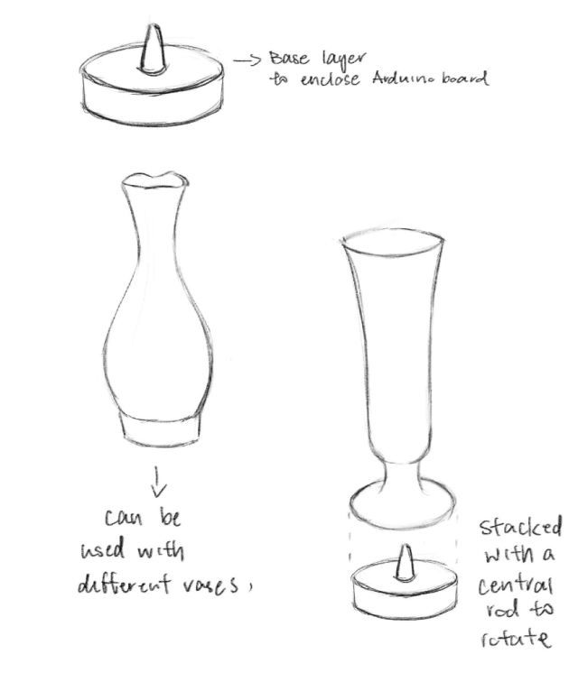
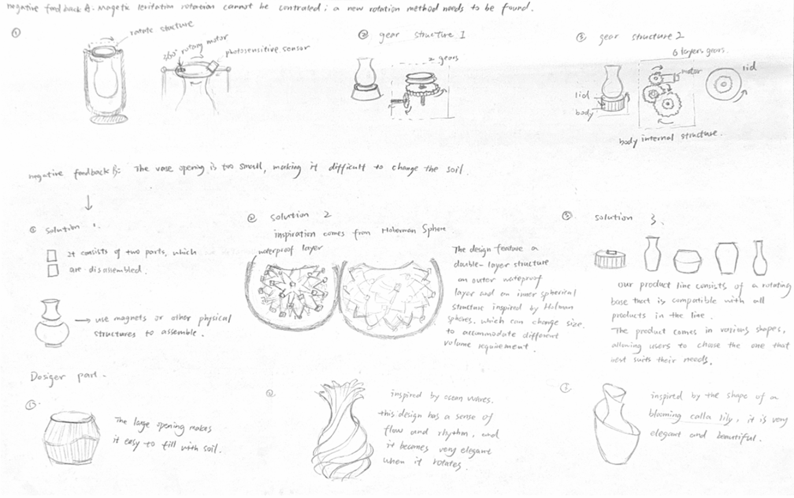
Iteration 2: Vase Design Exploration & Modeling
In this design iteration, we conducted an in-depth exploration of vase forms, drawing inspiration from traditional East Asian ceramic art to investigate diverse patterns and shapes. The design features a floral motif at the vase's base, with the body's undulating contours organically following the textural flow of the pattern, while the overall silhouette references the classical forms of traditional Chinese vases.
* The modeling for this section was supported by GuDian Studio.
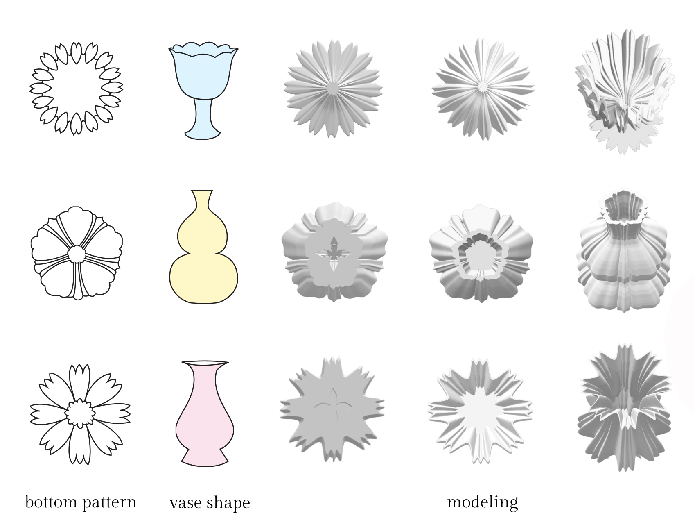
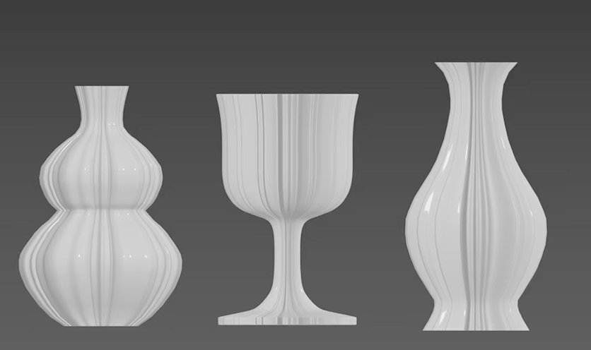
Iteration 3: Gear Structure
We used a gear structure to achieve the selection of the base surface.
This structure can be downloaded from https://makerworld.com/zh/models/1391956-rotating-base-2-0#profileId-1442324.
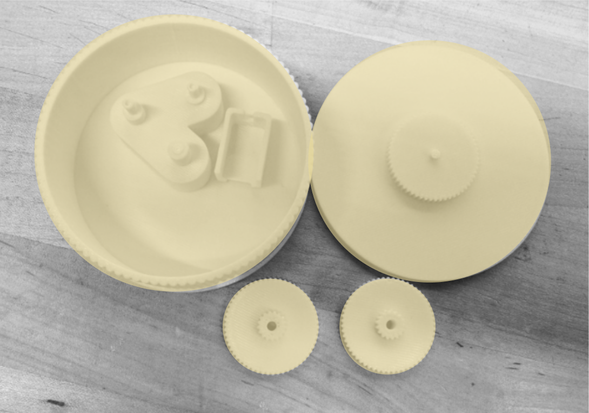
Iteration 4: Base Design & Modeling
The rotating base is inspired by traditional Chinese object stands, on which precious items like vases are customarily displayed. We incorporated lotus and ruyi motifs, imbuing the base with traditional elegance and auspicious symbolism.
* The modeling for this section was supported by GuDian Studio.
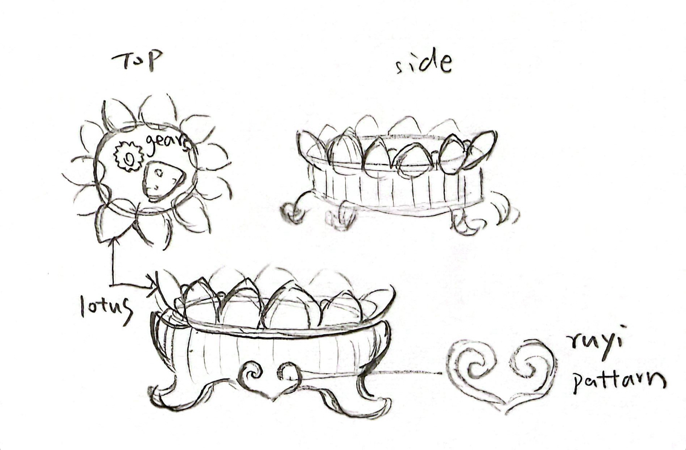
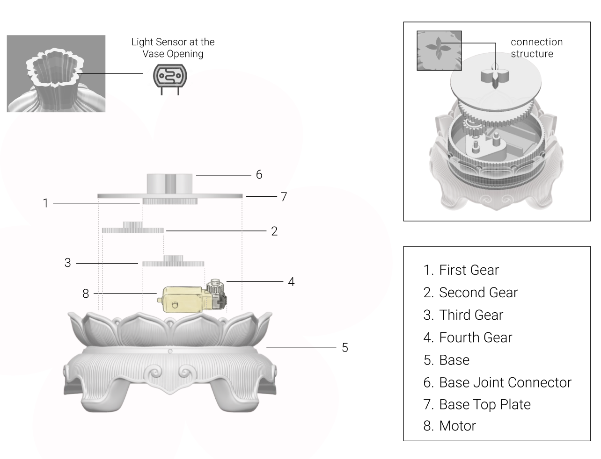
Iteration 5: 3D Printing & Prototyping
We transitioned from digital models to physical prototypes through 3D printing, a process that proved far more challenging than anticipated. This phase involved printing individual components—gears, base plates, connector pieces, and the decorative vase body—each revealing critical flaws that weren't apparent in our digital simulations.
Initial Failures and Technical Issues:
Our first attempt at printing the vase ended in complete failure due to excessively thin rim walls, which collapsed during the printing process. This immediately highlighted a fundamental disconnect between our digital design and the physical limitations of 3D printing materials.
The mechanical components presented equally frustrating challenges. We discovered that no tolerance had been left between the gears, causing them to jam and bind against each other rather than rotate smoothly. What seemed like precise digital fits translated into unusable physical parts, as we failed to account for the slight material expansion and surface irregularities inherent in FDM printing.
Perhaps most problematic was the connection between the vase and its base. The lack of proper clearance prevented the two components from assembling correctly, rendering the entire rotating mechanism non-functional. Our digital model showed a perfect fit, but reality proved otherwise.
Lessons Learned:
These failures became invaluable learning experiences. We learned to build in tolerance gaps of 0.2-0.3mm between moving parts, to reinforce thin-walled structures with minimum 2mm thickness, and to add chamfers and test-fit geometry for assembly connections. Through multiple iterations of print settings adjustments—refining layer height, infill density, and support placement—we gradually achieved parts that not only fit together smoothly but could also withstand the mechanical stress of continuous rotation.
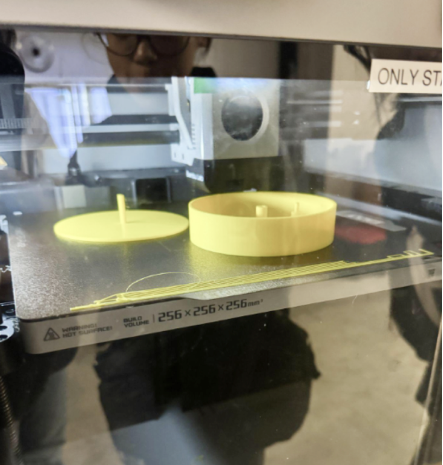

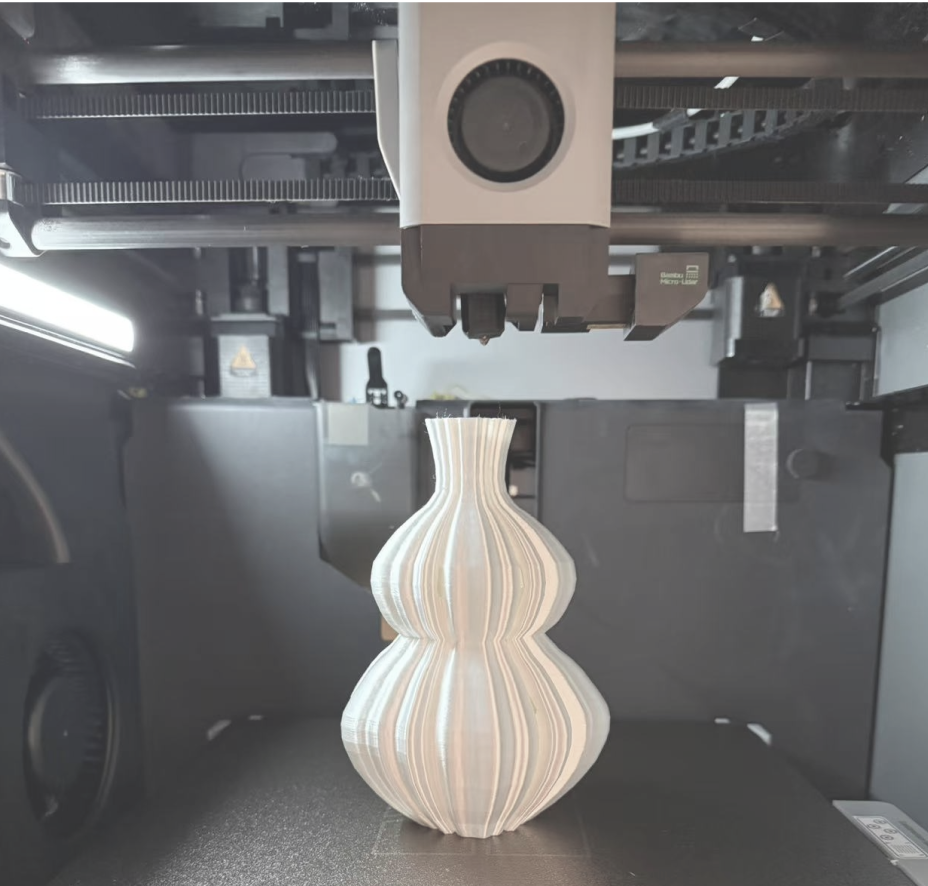
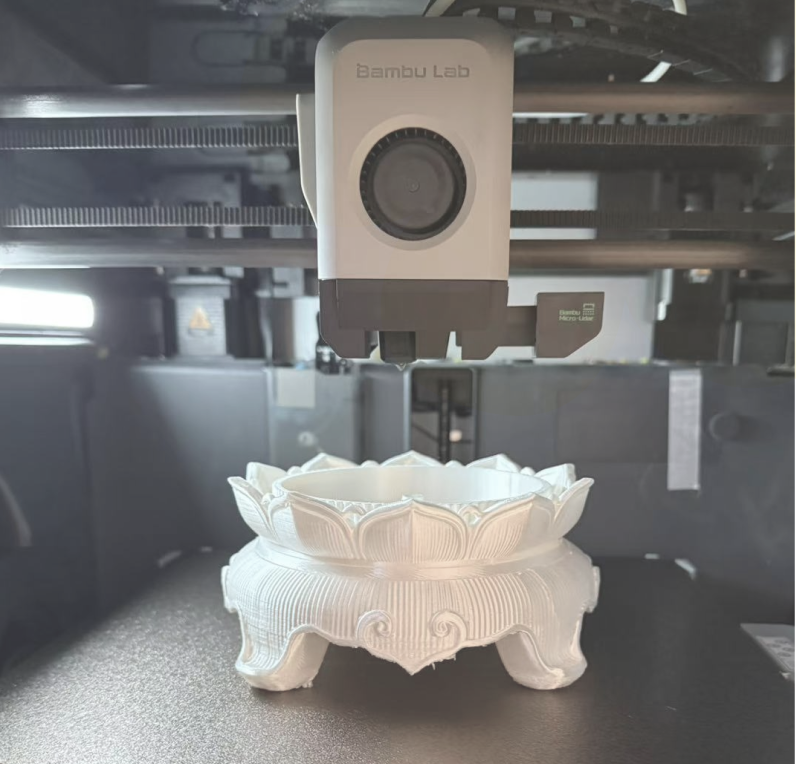
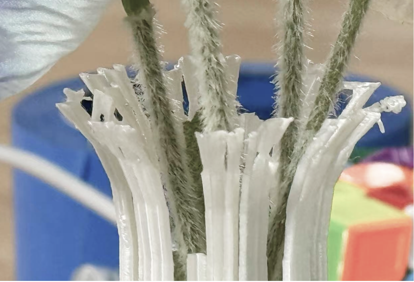Some parts of vase print failure at the first time.
Reflections
Successes: We have successfully developed a prototype that combines aesthetics and functionality. The gear mechanism has been effectively integrated into our project.
Challenges: 1. Achieving precise mechanical tolerances has proven challenging—gears must mesh perfectly and rotate smoothly. 2. During 3D printing, materials often cause jams or other malfunctions, leading to frequent print failures. 3. There is a need to improve our modeling skills, as our current capabilities fall short of meeting complex design requirements.
Learnings: When conducting tests, it is crucial to run extensive preliminary experiments and perform numerous trials. Otherwise, failures are almost certain to occur. Additionally, it is essential to understand that modeling for printing requires accounting for tolerances; otherwise, items printed over a long period may end up being unusable.